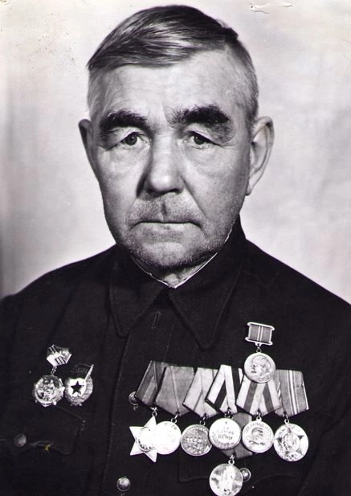
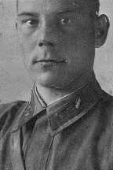
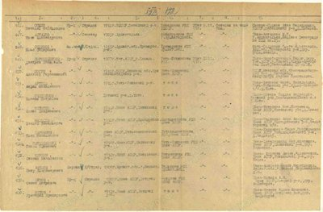
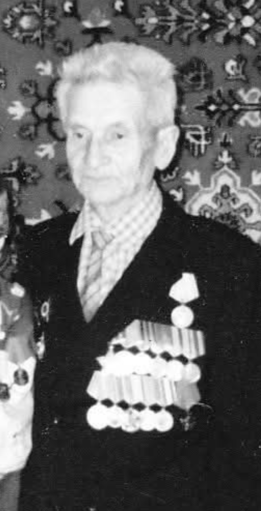
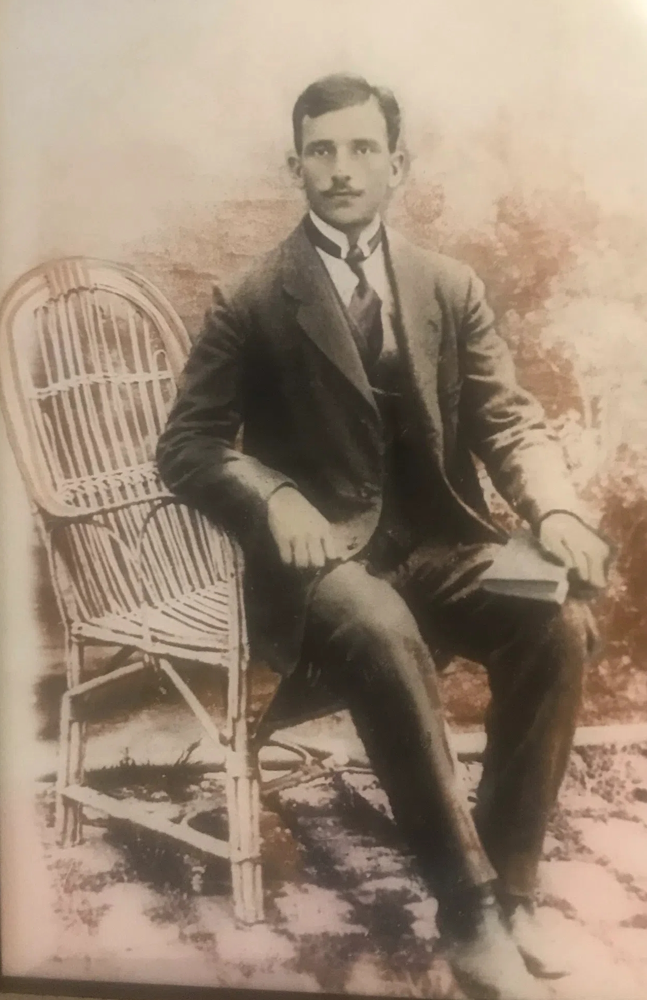
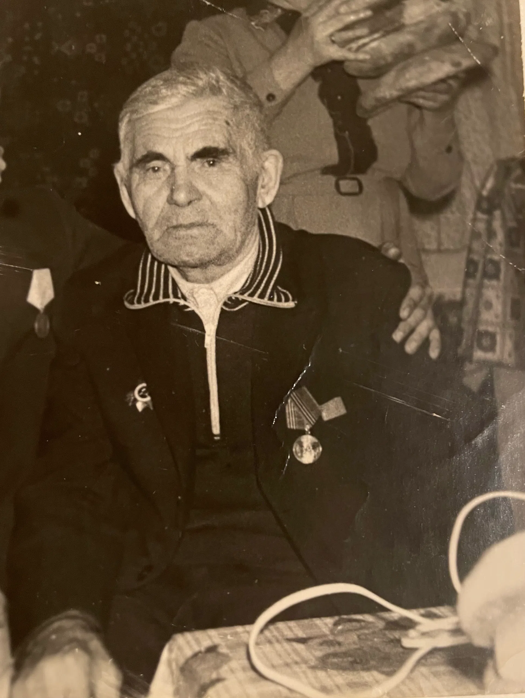
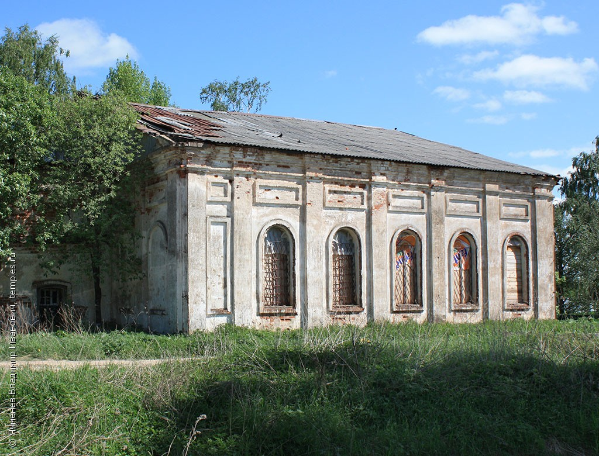
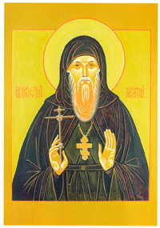

| № | ФИО | Пол | Поколение | Рождение | Смерть | Место | Ветвь рода |
|---|
Семейный историко-документальный архив
Подлинные архивные первоисточники, подтверждающие боевой путь и историю защитников Отечества рода: архивные наградные листы и фронтовые приказы ЦАМО РФ, документы участников Первой мировой и Великой Отечественной войн, подлинная красноармейская книжка из музейных фондов.
🌳 О семье и структуре родословного древа
Родословное древо рода Туркиных составлено на основе подлинных архивных первоисточников XV–XX веков: великокняжеских грамот, дозорных и переписных книг, ревизских сказок, исповедных росписей и метрических книг. Родословие берет свое начало на рубеже XV–XVI веков в Введенском погосте Оквад на Вычегде и на возвышенном плато Коквицкой «горы» (Вычегодская Пермь, Яренский уезд).
В открытом доступе древо представлено до поколения участников Великой Отечественной войны — ветеранов и павших героев 1941–1945 гг. рода Туркиных (Михаил Николаевич Туркин, Степан Николаевич Туркин, Иван Николаевич Туркин). Для просмотра современных поколений потомков (с 1935 г. по настоящее время) и родственных семейных линий (Шехониных, Шуктомовых, Зиновьевых, тайской ветви) используется защищенный семейный доступ по паролю.
Защитники Отечества: Герои Великой Отечественной и Первой мировой войн
Документально подтвержденные боевые биографии дедов по архивным материалам Центрального архива Министерства обороны РФ (ЦАМО РФ), Российского государственного военно-исторического архива (РГВИА), музейным фондам и наградным приказам:

Туркин Михаил Николаевич
- Орден Славы III степени (Приказ 18 гв. мехбр № 41/н от 06.06.1945) — за отвагу в боях в Австрии и уличных боях в Вене: расчетом уничтожено 3 станковых пулемета, 20 гитлеровцев, подорвано 3 повозки врага с грузом. Представление подписано комбригом Героем Советского Союза гв. подполковником Овчаровым.
- Медаль «За боевые заслуги» (Приказ 45 мехбр № 37/н от 03.08.1944) — за бои у дер. Стынка (Румыния) 3–4 июня 1944 г.: расчетом уничтожено до 20 солдат, рассеяно до 2 взводов пехоты.
- Участие в разгроме Квантунской армии (Маньчжурия, 1945): Медаль «За победу над Японией», благодарность Верховного Главнокомандующего И. В. Сталина (приказ № 372 от 23.08.1945 г.), бригаде присвоено почетное звание «Хинганская».
- Медаль «За взятие Вены» (Указ от 09.06.1945).
- Медаль «За оборону Сталинграда» (Указ от 22.12.1942).
- Медаль «За победу над Германией в ВОВ» (Указ от 09.05.1945).
- Нагрудный знак «Отличный минометчик» (1943).
- Орден Отечественной войны II степени (Указ от 06.04.1985 к 40-летию Победы).

Туркин Иван Николаевич
- ОРДЕН ЛЕНИНА (посмертно) (Приказ Командующего БТ и МВ 1-го Белорусского фронта № 0165/н от 31.05.1945 г. / ЦАМО РФ ф. 33, оп. 686046, д. 170) — за исключительное мужество, героизм и образцовое командование танковой ротой в решающих наступательных боях в Восточной Померании.

Туркин Степан (Стефан) Николаевич

Зиновьев Владимир Семенович
- Орден Красной Звезды (Приказ 265 сд № 18/н от 06.03.1945) — в оборонительном бою севернее н.п. Хасендорф 18.02.1945 г., командуя расчетом, уничтожил 19 солдат и пулемет противника.
- Орден Славы III степени (Приказ 265 сд № 80/н от 27.09.1944) — в бою у н.п. Вилтой 19.09.1944 г. расчет подавил 2 станковых пулемета и миномет, отразил 2 вражеские контратаки.
- Медаль «За отвагу» (Приказ 951 сп № 016-Н от 15.07.1944) — за бои на Карельском перешейке: под ураганным огнем работал за наводчика и заряжающего.
- Медаль «За взятие Берлина» (Акт от 09.06.1945).
- Медаль «За освобождение Варшавы» (Акт от 09.06.1945).
- Медаль «За победу над Германией в ВОВ» (09.05.1945).

Зиновьев Семён Григорьевич
- Красноармейская книжка от 13.06.1943 г. («Годен к … 7.8.44») — Айкинский центральный музей Усть-Вымского музейного объединения Республики Коми, КП 8347, рег. № 21112145.
- Именной список потерь 181 пехотного Остроленского полка № 31904 — РГВИА, ф. 16196, оп. 1, д. 346.
- Карточка военнопленного лагеря Миловиц (Milowitz) — РГВИА, Картотека бюро учета потерь (пленные), шкаф б/н, ящик 6292-К.
Шуктомов Александр Михайлович
- Именной список военно-пересыльного пункта 34 зсп 29 зсд от 18.01.1942 г. — ЦАМО РФ, фонд 8312, опись 37579с, дело 3, кадр 38, запись № 3526.
- Печатная Книга Памяти Республики Коми — том 6, стр. 705 (сведения о призыве, демобилизации в июле 1942 г. и дате смерти в сентябре 1970 г.).

Шехонин Михаил Афанасьевич
- Печатная Книга Памяти Республики Коми — том 5, стр. 612 (сведения о рождении, звании мл. лейтенанта, призыве в июле 1941 г., демобилизации по ранению в январе 1943 г. и смерти в ноябре 1988 г. в с. Лойма).
- Филиал ЦАМО РФ (военно-медицинских документов, г. Санкт-Петербург) — Картотека общего учета, шкаф Шеряев - Шишера, ящик 096-26; Фонд «Свидетельства о болезни», ящик ЭГ 2513.
- ЦАМО РФ — Юбилейная картотека награждений, шкаф 62, ящик 2, номер документа 89 (Орден Отечественной войны I ст., запись № 1522835818).
Православное духовенство и приходские храмы предков (XVII–XX вв., 1646–1937 гг.)
На протяжении более трёх столетий — от переписных книг XVII века до XX века — духовная и повседневная жизнь поколений предков была неразрывно связана с православными обителями и приходскими церквями Яренского, Усть-Вымского и Усть-Сысольского уездов Вологодской губернии (ныне Республика Коми и Кировская область). Род Туркиных дал Северу уникальную династию священнослужителей, соборных диаконов, причетников и монашествующих, а прихожане и крестьяне края (включая родственные семьи Шуктомовых, Зиновьевых, Сюткиных, Полещиковых, Пасынковых, Кызъюровых, Летовых, Ярановых) на протяжении веков принимали в этих храмах таинства крещения, браковенчания и погребения.
🏛️ с. Коквицы — Христорождественская церковь
Главный оплот рода (150+ лет)
Родовое гнездо и непрерывное служение нескольких поколений клира Туркиных:
- Священники (иереи): о. Степан Иванович Туркин (служил в 1734–1773 гг., разбор 1736 г., в 1773 г. 62-летний вдовый священник по исповедной росписи ВЦА двор 167); о. Иван Петрович Туркин (пономарь в 1710 г., священник в 1747 г.).
- Диаконы: о. Алексей Елисеевич Туркин (пономарь с 1818 г., рукоположен в диакона в 1822 г., служил до 1844+ гг.).
- Пономари: Леонтий Петрович (1732–1783 гг.); Елисей Леонтьевич (посвящен в 1783 г. еп. Иоанном, служил более 33 лет, супруга Татьяна Васильевна Пономарёва); Пётр Петрович (~1714 г.р.).
- Сыновья причта: Иван (пономарь), Максим, Гавриил, Дмитрий (РС 1795 и 1811 гг.).
⛪ г. Лальск — Воскресенский собор
Соборный диакон (1870–1904)
- Соборный диакон о. Михаил Алексеевич Туркин (ок. 1839 – 14.06.1904) — сын диакона о. Алексея Коквицкого. Выпускник Вологодской духовной семинарии (1862 г.). С 1868 г. дьячок, 20.07.1870 г. рукоположен во диакона, с 1871 г. — штатный соборный диакон Воскресенского собора г. Лальска (34 года беспорочного служения, фонд ГАКО № 1310). Супруга София Прокопьевна Брызгалова.
- Родоначальник лальской ветви духовенства: воспитав сыновей в традициях духовного сословия, дал начало новому поколению священнослужителей Вологодской епархии.
⛪ Кадников, Вологда, Грязовец — Приходы о. Прокопия
Приходской священник
Священническое служение сына лальского соборного диакона о. Михаила Алексеевича Туркина в центральных уездах Вологодской губернии:
- Священник о. Прокопий Михайлович Туркин (род. ок. 1868 г. в г. Лальске) — выпускник Вологодской духовной семинарии. Назван в честь деда по матери, сольвычегодского мещанина Прокопия Брызгалова.
- Успенская Чернецкая церковь (Грязовецкий уезд): 30.08.1891 г. рукоположен во диакона (Вологодские епархиальные ведомости, 1891 г., № 20, с. 305).
- Николаевская Пустораменская церковь (Кадниковский уезд): в 1897 г. рукоположен во священника и служил настоятелем прихода 14 лет.
- Спасо-Преображенская церковь на Брусничном (Вологодский уезд): с 13.09.1911 г. — приходской священник (ВЕВ 1911 г., № 19, с. 376; база данных parishes.ru № 7463).
⛪ с. Ульяново и с. Кужба — Троице-Стефановский монастырь
Исповедники XX века
- Монах Виталий (Виталий Иванович Туркин) (1865, с. Коквицы – 06.11.1937) — родной брат прапрапрадеда Алексея Ивановича Туркина и дядя Николая Алексеевича Туркина. Монах Троице-Стефано-Ульяновского мужского монастыря. После закрытия обители в 1923 г. проживал в с. Кужба вместе с казначеем обители иеромонахом Мелетием (Федюнёвым), совершая требы для верующих. Арестован в сентябре 1937 г., приговорён «тройкой» к 10 годам ИТЛ, погиб в Вогваздинском лагпункте Ухтпечлага. Реабилитирован.

(иеромонах)
⛪ с. Ыб — Свято-Вознесенский храм
Приход предков (1827–1835)
- Метрики таинств (НАРК ф. 130): здесь венчались Харлампий Яковлевич Пасынков и Параскева Круглякова (24.04.1846 г.); Иван Григорьевич Кызъюров и Александра Шилина (18.01.1859 г.); Платон Харлампиевич Пасынков и Анастасия Каракчиева (10.11.1874 г.).
⛪ с. Лойма — Церковь Успения Богородицы
Приход рода Сюткиных
⛪ с. Усть-Вымь — Михайло-Архангельский монастырь и храмы
Прямой предок (1731 г.)
⛪ с. Ляли — Богоявленская церковь
Клир и приход предков
⛪ погост Оквад (Катвад) — Введенская церковь
Колыбель рода (XVII в.)Древнейшее задокументированное местопребывание рода Туркиных на Вычегде:
- Основатель династии: Афанасий Семёнович Туркин (ок. 1600 г.р.) — архиепископский приказной человек на Коквицком погосте по переписи 1646 г. (РГАДА ф. 1209, д. 1080), управлял вотчинными доходами архиепископа Вологодского и Великопермского.
- Дьячки и пономари: Исаакий Афанасьевич Туркин (род. 1635 г., 11 лет в 1646 г.) — дьячок Введенской церкви (переписная книга 1678 г.), пономарь (1696/97 г.).
- Священники: о. Автоном Лаврентьевич Туркин (ок. 1690 г.р.) — священник Введенской церкви в 1731 и 1736 гг. (МК ГААО ф. 29, разбор ВУЦА ф. 363), дочь Марина.
⛪ Палевицы, Серёгово, Яренск
Приходы Вычегды- с. Палевицы (Покровская ц.): священник о. Алексей Тимофеевич Туркин (1734–1758 гг., супруга Матрона, дети Михаил, Андрей, Марфа); дьячок Иван Петрович Туркин (1747 г.).
- с. Серёгово и Княжпогост: пономарь и дьячок Иван Елисеевич Туркин (1802–1815+ гг.).
- г. Яренск (Преображенский собор): соборный сторож Михаил Алексеевич Туркин (с 1755 г., жена Марфа Козьминична (Ипатова)).
Судебные баталии и государева служба Туркиных в XVII веке
Уникальный комплекс подлинных следственных дел XVII века из фонда Вологодского архиерейского дома раскрывает подлинную, полную драматизма и эпического размаха жизнь наших прямых предков. В отличие от сухих статистических перечней, эти дела сохранили живую русскую скоропись допетровской Руси, показания под крестным целованием, прямую речь предков, яростные семейные тяжбы, государственные поручения и дипломатические миссии рода Туркиных на гигантском пространстве от первопрестольной Москвы и кафедральной Вологды до Сургута на реке Оби и заполярного Пустозерска.
Дело о захвате дворовой земли, побоях и брани: челобитная священника Гавриила Костромина на соседа Степана Ефимьева, Афанасия и Василия Туркиных
Подлинное следственное дело 1646 года (года составления знаменитой Переписной книги И. Скрябина, где Афанасий прямо зафиксирован как «архиепископа приказной человек»). Введенский священник погоста Оквад и с. Усть-Вымь Гавриил Костромин обратился с челобитной к архиепископу Маркеллу сразу по двум взаимосвязанным обвинениям: против соседа Степана Ефимьева о незаконном захвате части приходской дворовой земли, и против светского правителя вотчины Афанасия Туркина с сородичем Василием Туркиным, которые «бранили и били его» в ходе волостного межевого спора.
Волостной мирской долг: иск приказного дьяка Палицына на 75 рублей серебром
Судное дело по челобитной усть-вымского приказного дьяка Андрея Палицына о принудительном взыскании 75 рублей с представителей крестьянской общины во главе с Афанасием Туркиным. Деньги были взяты миром под заемную кабалу на неотложные мирские нужды волости.
Сургутская одиссея Архипа Туркина: сибирский соболиный промысел и кабалы на 347 рублей
Старший сын Архип Туркин 10 лет ходил в Сибири на промыслах, сколотив капитал в 347 рублей серебром. При встрече в Сургуте на Оби отец Афанасий силой отобрал кабалы, выгнал семью Архипа и угрожал косой. Архип преодолел тысячи верст в Вологду и добился указа архиепископа: взыскать 347 рублей с отца и вернуть сыну.
«Все ему прощаю»: отпускная отпись на выдел имущества и отказ Архипа кормить отца
Прямое продолжение сургутского конфликта. Содержит отпись Афанасия от 6 октября 1656 г.: отец благословляет Архипа жить отдельным двором, все ему прощает и выделяет корову, 100 аршин ткани и 15 рублей деньгами. Спустя 8 лет (1664 г.) на допросе на Усть-Выми отец потребовал содержания, но Архип твердо отказался по отписи и вновь ушел в Сибирь.
Челобитная патриарха Афанасия: жалоба на крестьянку Фёклу Жужгину (о дворе и земле) и на сыновей Архипа и Исаака (об отказе в кормлении и удержании денег)
Обширное следственное дело на 11 листах по челобитным престарелого патриарха рода (~70 лет). Афанасий ведет тяжбу на два фронта: бьёт челом архиепископу Симону против крестьянки Фёклы Михайловой дочери Жужгиной, незаконно завладевшей родовым двором и землей, а также против собственных взрослых сыновей — Архипа и Исаака, которые оставили престарелого отца без содержания («не кормят») и взяли у него деньги.
Государева служба: конвой боярина Артамона Матвеева в Пустозерск целовальником Кириллом Туркиным
Документы первостепенного государственного значения. Земский целовальник Кирилл Туркин (родной брат дьячка Исаака) организует транзитное конвоирование через Яренский уезд опального главы правительства России боярина А.С. Матвеева, ссылаемого в Заполярье. Кирилл лично нанимает ямщиков, подводы и производит выплаты из мирской казны.
Миссия в Москву: посыльщик Исаак Туркин и доставка военных податей со 144 дворов
Приемная отпись от 23 января 1679 года московских казенных приемщиков. Они подтверждают сдачу крупной суммы серебра, собранной со 144 дворов церковного причта, крестьян и бобылей Усть-Вымской и Оквадской вотчин на жалованье ратным людям Чигиринских походов. Ответственным лицом, доставившим казну в Москву через глухие зимние тракты, записан посыльщик Исаак Туркин.
Московское архиерейское подворье: о. Пётр Туркин в судебной защите приходских земель против Устюжской епархии
В архиерейском делопроизводственном томе (130 листов) зафиксированы памяти архиепископа Гавриила стряпчему московских дел Ивану Суровцову. Владыка предписывает: прибывших с Вычегды священника о. Петра Туркина и крестьянина Гаврила Козлова поселить на Московском архиерейском подворье, содержать и кормить за счет казны и оказать всестороннюю юридическую помощь в судебной защите приходских земель против притязаний Устюжской кафедры (лл. 78, 79–81, 83).
Волостной судья Усть-Выми: десятилетие судебной власти Исаака Туркина
Комплекс актов, фиксирующих Исаака Туркина в высшей выборной должности волости — выборного крестьянина и судьи на Усть-Выми: разбор челобитной священника о. Петра о земельном наделе (1688 г., д. 7753), земельный спор о пожне Онучина (1689 г., д. 8267) и указ приказа о проведении официального следствия по земельному спору на реке Ибеж (1698 г., д. 10789).
🗺️ Историческая география селений и городов рода
Селения расположены в бассейнах великих рек Русского Севера (Сысолы, Вычегды, Выми, Лузы) и на юге Сиама:
Один из древнейших культурных и сакральных центров Коми края, расположенный на семи холмах вдоль реки Сысолы. Название происходит от коми слова «ыб» — возвышенность, суходольное поле на холме. Родовое гнездо многих поколений Туркиных, Зиновьевых, Пасынковых, Кызъюровых и Айбабиных. В селе действовала каменная Свято-Вознесенская церковь (освящена в 1827–1835 гг., НАРК ф. 130) и более десятка святых целебных источников.
Старинное селение Сереговских гор на реке Вымь. Историческая родина ветвей Кызъюровых и Зиновьевых. Здесь родились прапрабабушка Клавдия Ильинична Кызъюрова (род. 1900), герой войны Владимир Семенович Зиновьев (род. 1925), а также советский государственный деятель, председатель Коми облисполкома (1937–1938) Иона Алексеевич Кызъюров.
Древнейшее село юга Коми земли на правом берегу реки Лузы, впервые упомянутое в летописях в 1478 году (близ села исследован Лоемский могильник IX–X веков). Село славится уникальным архаичным лоемским говором и величественным каменным храмом Успения Пресвятой Богородицы (построен в 1802–1804 гг.) с росписями Васнецовской школы 1916 г. Родина Марии Степановны Сюткиной (Шехониной) (1911–1981), её сестры Александры (род. 1922), их отца Степана Петровича Сюткина (1880–1933, раскулаченного в 1930 г.) и деда Петра Сюткина.
Старинная коми деревня, название которой происходит от коми слов «йӧрӧс» (речной порог, быстрина) и «дін» (около, устье) — «селение у речного порога». Историческая родина предков Шуктомовых, Полещиковых и Поздеевых. Здесь родились участник Великой Отечественной войны Александр Михайлович Шуктомов (род. 1911), Серафима Афанасьевна Полещикова (род. 1912). Из Ероздино также происходит выдающийся коми филолог и писатель Адольф Иванович Туркин (1936–1996).
Селение при впадении реки Вымь в Вычегду — колыбель зырянского православия святителя Стефана Пермского. В XVII веке фиксировалось как починок Боровой (местные жители называли «Яг» — сосновый бор). Коми название расшифровывается как «вок Вась дін» — «место у брата Василия». Родина прапрапрапрабабушки Параскевы Ивановны Кругляковой (Пасынковой) (род. 1828) и старейшей известной представительницы 9-го поколения Марии Григорьевны Кругляковой.
Древний погост на левом берегу реки Вымь, старинном Вымском речном торговом пути в Сибирь. Название восходит к финно-угорскому «ляй» (ручей в овраге, ключевая речка). В 1856 году здесь был воздвигнут каменный Богоявленский храм. Родина коми родов Каракчиевых (Анастасия Андреевна Каракчиева, род. 1851) и Шилиных (Александра Николаевна Шилина, род. 1839).
Основана в начале XVIII века в ходе крестьянского освоения новых пашен. Компонент «дор» на коми языке означает «край, берег, селение у воды/леса». Родина прапрабабушки Павлы Савватеевны Летовой (Туркиной) (род. 09.08.1908) и её матери Александры Семеновны Летовой (Ярановой) (род. 04.05.1874).
Знаменитая Коквицкая гора — возвышенность-«полуостров», омываемая Вычегдой, колыбель вычегодских коми (эжватас). Одно из легендарных сакральных мест Коми края со святынями времен Стефана Пермского. Главный духовный оплот рода Туркиных: при каменной Христорождественской церкви более 150 лет служили священники о. Степан и о. Иван, диакон о. Алексей, пономари Леонтий и Елисей. Родина прадеда Аркадия Михайловича (1935) и прапрадеда Михаила Николаевича (1906).
Древнейшая задокументированная родина Туркиных. В писцовой книге 1608 г. здесь жил молодой домохозяин Микитка Туркин, а в переписной книге 1646 г. — архиепископский приказной человек Афанасий Семёнович Туркин с 11-летним сыном Исааком. При местной церкви Введения Пресвятой Богородицы служили церковный дьячок Исаакий Афанасьевич (1678 г.) и священник о. Автоном Лаврентьевич (1731–1736 гг.).
Исторический, административный и кафедральный центр Пермской епархии. В Благовещенской церкви Усть-Выми служил священник о. Пётр Исаакович Туркин (прямой 8-й прадед Николая, зафиксирован в метрической книге 1731 года, ГААО). Волостной центр, к которому в XIX веке относились государственные крестьяне Туркины (8-я ревизия 1834 г., ГАВО).
Название деревни на коми языке означает: «сюла» (смолистый, кедровый ключ) + «туй» (тропа, дорога) — «путь к смолистому источнику». Место рождения прапрадеда Николая Алексеевича Туркина (03.11.1876 г., зафиксировано в метрической книге, ссылка в семейном архиве «с. 267»).
Главный административный, промышленный и культурный центр Коми края. На коми языке: «Сыктыв» (река Сысола) + «кар» (город) — «город на Сысоле». Исторический центр проживания и профессиональной деятельности поколений рода Туркиных XX–XXI веков. Родина поколений семьи: дедушки Михаила Аркадьевича (род. 1970), бабушки Светланы Евгеньевны (род. 1970), отца Вячеслава Михайловича (род. 1991) и дяди Никиты Михайловича (род. 2000).
Священные места Верхней Вычегды. В Ульяново расположен Троице-Стефановский мужской монастырь, основанный святителем Стефаном Пермским в 1385 году. Обитель монашеского служения монаха Виталия (Виталия Ивановича Туркина) (1865–1937). В соседнем селе Кужба после закрытия обители он совершал требы на дому вместе с казначеем обители иеромонахом Мелетием (Федюнёвым).
(иеромонах)
Древний приморский город и провинция на юге Таиланда, исторически известный как «Ворота Южного Таиланда» (Gateway to the South). В средние века город служил важным военным форпостом защиты столицы Сиама Аюттхаи (название связывают с «Chumnumphon» — место благословения и сбора рати). Место рождения пробанда рода Николая Вячеславовича Туркина (2024 г.).
🧬 Происхождение фамилий и история родов
Ономастическое исследование коренного северного рода Туркиных (для просмотра истории родственных фамилий войдите в семейный доступ):
Коренной северный род священнослужителей, монашествующих и крестьян Яренского уезда (Оквад, Коквицы). Древнейшие первоисточники: Дозорная книга 1608 г. с молодым домохозяином Микиткой Туркиным и родоначальником прямой мужской линии Семёном Туркиным; Переписная книга 1646 г. (РГАДА, ф. 1209, д. 1080) с двором архиепископского приказного человека Афанасия Семёнова сына Туркина с 11-летним сыном Исааком. Прямая мужская линия непрерывно соединяет 15 поколений до Николая Вячеславовича (2024 г.).
Старинный род деревни Палтыдор Коквицкой волости. 2-я ревизия 1748 г. (РГАДА, ф. 350, д. 4216) зафиксировала родоначальников: Кирило Харитонов Летов (70 лет, род. ~1678, дед Харитон род. ~1650 г.), Василий Степанов Летов (45 лет, род. ~1703). В роду: Павла Савватеевна (Летова) Туркина (род. 1908), её отец Савватий Васильевич Летов.
Фамилия имеет глубокое этнографическое значение: на коми языке слово «яран» означает ненца, оленевода или человека, пришедшего из тундровых промыслов. В роду: Александра Семеновна (Яранова) Летова (род. 1874) и её отец Симеон Васильевич Яранов.
Чисто зырянская по происхождению фамилия, восходящая к коми дохристианскому имени «Сизь» — дятел (птица-символ трудолюбия, упорства и лесного мастерства). В роду: Павла Ивановна (Сизева) Туркина (род. 1883) и её отец Иван Семенович Сизев.
Фамилия характерна для бассейна реки Лузы (Прилузье). Образована от северной уменьшительно-ласкательной формы Сютко от христианского имени Евсей / Евсевий либо Исихий / Сюня. В роду: Мария Степановна (Сюткина) Шехонина (1911–1981), её отец Степан Петрович Сюткин (1880–1933) и дед Пётр Сюткин; а также Анна Андреевна (Сюткина) Шехонина и её отец Андрей Александрович Сюткин.
Старинная северная фамилия, происходящая от прозвища Шехоня (выходец с реки Шексны либо живой, расторопный человек). В роду: участник Великой Отечественной войны Михаил Афанасьевич Шехонин (1909–1988), Афанасий Давидович Шехонин и Давид Шехонин.
Древнейший коренной коми род. Фамилия происходит от коми слова «шуктом» — прямой, гладкий ствол дерева без сучьев (символ честности и статности). В роду: участник Великой Отечественной войны Александр Михайлович Шуктомов (1911–1970), Михаил Иванович Шуктомов и их предки до XVII века.
Фамилия происходит от профессионального звания «полесовщик» / «полещик» — государственный лесной смотритель, егерь на Вычегде и Сысоле. В роду: Серафима Афанасьевна (Полещикова) Шуктомова (род. 1912), Афанасий Галактионович (род. 1886), Галактион Афанасьевич Полещиков.
Известнейший крестьянский и духовный коми род Ыбской волости. В роду: Мария Платоновна (Пасынкова) Шуктомова (род. 1877), Платон Харлампиевич Пасынков (род. 1851, венчание 10.11.1874), Харлампий Яковлевич Пасынков (род. 1827, венчание 24.04.1846 в 19 лет).
От мирского имени Кругляк (крепкий, плотный, здоровый человек). В роду: Параскева Ивановна (Круглякова) Пасынкова (род. 1828 в д. Вагваздино, венчалась в 18 лет в 1846 г.) и старейшая женщина родословной Мария Григорьевна Круглякова (род. нач. XIX века).
От крестильного греческого имени Зиновий («живущий по воле Зевса/Бога»). В роду: ветеран двух войн Семен Григорьевич Зиновьев (род. 27.01.1890 в с. Ыб), герой штурма Берлина Владимир Семенович Зиновьев (род. 1925), Григорий Иванович Зиновьев.
Древнейшее славяно-северное охранительное имя Поздей («поздний, желанный сын»). В роду: Мария Ивановна (Поздеева) Зиновьева (род. 1860 в д. Ероздино), Иван Иванович Поздеев (род. 1835, венчание 24.01.1858 в возрасте 23 лет).
Уникальная чисто зырянская фамилия: от коми «кыз» (ель) + «юр» (вершина, голова, мыс) — «вершина ели». В роду: Клавдия Ильинична (Кызъюрова) Зиновьева (род. 1900), Илья Иванович Кызъюров (род. 30.06.1865 в Мелком Ыбе), Иван Григорьевич Кызъюров (род. 1836, венчание 18.01.1859 в 23 года).
Редкая коми фамилия Сысольской земли. В роду: Елисавета Петровна (Айбабина) Кызъюрова (род. 1867) и её отец Пётр Борисович Айбабин.
Древний вымский род (страж, дозорный речной заставы). В роду: Анастасия Андреевна (Каракчиева) Пасынкова (род. 1851 в д. Ляли), Синклитикия Ионична (Каракчиева) Поздеева (род. 1841, венчание 24.01.1858 в 17 лет), Иона Агафонович Каракчиев (род. ок. 1820 г.).
Источники генеалогического исследования
Генеалогическое исследование рода Туркиных и родственных фамилий выстроено на непрерывной документальной доказательной базе с 1490 по 2026 год (свыше 530 лет истории, 20 поколений). Исследование объединяет материалы пяти государственных архивов (РГАДА, ГАВО, ВЦА, НАРК, ЦАМО), древнерусские летописи и актовые публикации, базы данных духовенства и фундаментальные труды исследователей-краеведов.
📖 Фундаментальные краеведческие издания: Серия «Усть-Вымское родословие»
При подготовке рукописной основы родословной (66 персон, 9 поколений с конца XVIII по XXI век) ключевую роль сыграли труды замечательных родоведов-краеведов Усть-Вымского района. Семья выражает глубокую признательность и искреннюю благодарность Лидии Афанасьевне Молодцовой, Валентине Александровне Гусевой и Людмиле Владимировне Ванеевой, историко-генеалогическому клубу «Емдiнса родовед» («Родовед»), Усть-Вымскому землячеству Республики Коми, Администрации МР «Усть-Вымский» и Национальной библиотеке Республики Коми за подвижнический труд по сохранению исторической памяти северных коми родов.
«Усть-Вымское родословие. Коквицкая „гора“»

- Село Коквицы и д. Сюлатуйская: прямая мужская линия Туркиных (Николай Алексеевич, Михаил Николаевич и их потомки);
- Деревня Пальтыдор: предки Летовы и Ярановы (Павла Савватеевна Летова, Александра Семеновна Яранова);
- Детальная расшифровка ревизий XVIII–XIX веков.
«Усть-Вымское родословие» (Том 2)

- Связующее звено между Коквицким кустом (Том 1) и селениями Вычегодского поречья (Том 3);
- Детальная роспись семейных связей и брачных союзов соседних волостей;
- Документальное подтверждение миграционных путей семей коми крестьян.
«Усть-Вымское родословие» (Том 3)

- Исповедная ведомость 1914 г. с. Коквицы (стр. 532): документальная роспись состава семьи Алексея Ивановича и Николая Алексеевича Туркиных с детьми Александром (10 лет), Стефаном/Степаном (4 года) и Иваном (1 год) в деревне Сюлатуйской;
- Деревня Ероздино (Йӧрӧсдін): предки Шуктомовы, Полещиковы и Поздеевы (Александр Михайлович, Серафима Афанасьевна);
- Деревня Горелый Ыб (с. Горесоит): предки Зиновьевы и Кызъюровы (герой войны Владимир Семенович Зиновьев);
- Точнейшая привязка к метрикам и ревизским сказкам XIX века.
🤝 Исследовательские организации и соавторы издательского проекта:
📜 Древнерусские летописи и актовые первоисточники (XV–XVII вв.)
Жалованная грамота великого князя Ивана III епископу Филофею
Древнейший актовый документ рода. В перечне деревень погоста Аквад (Оквад) при церкви Введения Богородицы зафиксирован прародитель патронима: «вд. Митинской Мышева Турка малой да Митка Степанов Чирак... сины дети».
Сотная с писцовых книг И. Г. Огарева и Ф. Юрьева на Вычегодскую Пермь
Древнейшее поземельное описание Вычегодской Перми конца XVI века. В деревне Шежам на реке Вычегде зафиксирован прямой предок XVI века: «Деревня Шежам на реке на Вычегде... Пашни паханые худые земли 12 чети... В живущем треть выти... Микифор Туркин».
Писцовая книга Яренского уезда письма В. Ларионова и А. Горохова
Древнейшее сохранившееся писцовое описание уезда эпохи Смуты. На погосте Катва (Оквад) зафиксирован самостоятельный тяглый двор молодого домохозяина: «в. МИКИTКА ТУРКИН молотчей» (родной брат патриарха Семёна Туркина).
🏛️ Государственные архивы: фонды, описи и архивные дела
- Ф. 1209, оп. 1, д. 1080 (1646 г.): Переписная книга воеводы И. Г. Скрябина. Погост Оквад: двор приказного человека Офоньки Семенова сына Туркина с сыном Исачком (11 лет), сын Архипко ушёл в 1643 г. в Сибирь.
- Ф. 1209, оп. 1, д. 1081 (1678 г.): Перепись стольника Ф. И. Потёмкина. Дьячок Исаак Афанасьев сын Туркин с сыновьями Петром, Тимофеем, Ларионом; бобыль Ипатий Семенов сын Туркин.
- Ф. 1209, оп. 1, д. 1081 (1710 г.): Ландратская перепись. Церковный пономарь Иван Петрович Туркин 22 года с женой Татьяной и сыном Стефаном.
- Ф. 350, оп. 2, д. 4216 (1748 г.): 2-я государственная ревизия. Деревня Пальтыдор (Летовы, Ярановы), с. Коквицы (Сизевы).
- Ф. 350, оп. 2, д. 4224, 4232 (1762 г.): 3-я ревизия податного населения Яренского уезда.
- Ф. 1260, оп. 1 (1646–1701 гг.): Комплекс 11 дел Вологодского архиерейского дома по роду Туркиных: судное дело 1646 г. священника Г. Костромина (д. 633); мирской долг Афанасия Туркина 75 руб. (д. 635); сургутский капитал в 347 руб. (д. 1392); отпускная память Архипу Туркину (д. 2347); челобитная Афанасия на сыновей Архипа и Исаака (д. 2913); целовальник Кирилл Туркин и конвой боярина А. С. Матвеева в Пустозерск (д. 5032, 5049); посыльщик Исаак Туркин с казной в Москву со 144 дворов (д. 5260); выборный судья Исаак Туркин (д. 7753, 8267, 10789); священник о. Пётр Туркин на архиерейском подворье в Вологде (д. 7519).
- ВЦА (Вологодский церковный архив), ф. 496: Исповедная роспись Христорождественской церкви с. Коквицы 1773 года. Двор № 167: прямая семья Туркиных (Стефан Иванович 62 года, дети Алексей, Иван, Василий).
- Клировые ведомости церквей Яренского уезда: послужные списки священно- и церковнослужителей Туркиных Введенской церкви Оквада и Христорождественской церкви Коквиц.
- Ф. 231 (Яренское уездное казначейство): 10-я ревизия 1858 г. — д. Сюлатуй (Иван Туркин с сыном Алексеем 6 лет), д. Ероздино (Шуктомовы), д. Горелый Ыб (Зиновьевы).
- Ф. 231: Ревизские сказки 9-й (1850 г.), 8-й (1834 г.), 7-й (1816 г.) ревизий селений Коквицкой, Часовской и Усть-Вымской волостей.
- Ф. 255 (Духовная консистория): Метрические книги Коквицкой Христорождественской церкви (запись о рождении Николая Алексеевича Туркина в 1876 г., Михаила Николаевича Туркина в 1906 г.).
- Ф. 255: Метрические книги Часовской Спасской церкви (запись о рождении Евгения Александровича Шуктомова в 1908 г. в д. Ероздино).
🎖️ Военные архивы и электронные банки документов (ВОВ 1941–1945 гг.)
🌐 Государственный портал «Память Народа»
Официальный общедоступный банк подлинных документов о фронтовиках и войсковых операциях ВОВ, созданный Министерством обороны РФ:
- Туркин Михаил Николаевич (1906–1993): гвардии старший сержант, командир минометного расчета 18-й гв. мехбригады, кавалер орденов Красной Звезды, Славы III ст. и Отечественной войны II ст., участник обороны Сталинграда, взятия Вены и освобождения Маньчжурии;
- Туркин Иван Николаевич (1913/1918–1945): капитан, командир роты тяжелых танков 40 ТТП, кавалер высшей награды СССР — Ордена Ленина (посмертно);
- Туркин Степан Николаевич (1910/1912–1941): красноармеец, стрелок 131 сп 71 сд, погиб в бою 2 ноября 1941 г. в Карело-Финской ССР;
- Зиновьев Владимир Семенович (1918–1945): гвардии майор, кавалер орденов Александра Невского, Красного Знамени, Отечественной войны I и II ст., медали «За отвагу», герой штурма Берлина;
- Зиновьев Семён Григорьевич (род. 1896): старший сержант артиллерии, медаль «За отвагу», благодарность Сталина № 372 за Маньчжурскую операцию.
🌐 Банк данных «Подвиг Народа в Великой Отечественной войне»
Электронная база оцифрованных наградных листов с описаниями личных подвигов воинов, выписками из боевых приказов и представлениями к орденам и медалям СССР.
🌐 Перейти на podvignaroda.ru ↗🌐 Обобщенный банк данных «ОБД Мемориал»
Банк данных об участниках войны, госпитальных книгах и воинских захоронениях защитников Отечества, погибших и пропавших без вести.
🌐 Перейти на obd-memorial.ru ↗🌐 Научно-генеалогические базы данных, каталоги и исследования
⛪ Православные приходы и монастыри Севера
Научная база данных северного духовенства. Раздел «Персоналии № 57: Туркины» документирует династию священно- и церковнослужителей Введенской церкви Оквада и Христорождественской церкви Коквиц (дьячок Исаакий Афанасьевич, пономарь Иван Петрович, иерей Автоном Лаврентьевич и др.).
🌐 Персоналии духовенства: Туркины (parishes.ru) ↗🌳 Форум «Всероссийское Генеалогическое Древо» (ВГД)
Крупнейший русскоязычный генеалогический портал. Тематические разделы по Яренскому уезду, Вологодской епархии, Коквицкой волости и архивам Республики Коми, аккумулирующие опыт сотен исследователей.
🌐 Генеалогический форум ВГД ↗📖 Научные монографии и публикации
- Жеребцов И. Л. «Коми край в середине XVI – начале XVIII века: Расселение, численность и состав населения», Сыктывкар, Коми НЦ УрО РАН. Фундаментальный свод историографии, демографии и колонизации Вычегодского края.
- ИЯЛИ Коми НЦ РАН. «Коми край в начале XVIII века: Переписная книга Яренского уезда 1710 года», Сыктывкар, 2014. Академическое издание подлинного текста переписи.
- Башнин Н. В. «Сшел в Сибирь»: миграция населения яренской вотчины Вологодского архиерейского дома в XVII в. // «Институты и общности», 2019, с. 135–136.
- Доронин П. Г. «Вычегодско-Вымская (Мисаило-Евтихиевская) летопись» // Историко-филологический сборник, Сыктывкар, 1958.
- Мацук М. А. «Город Яренск и Яренский уезд в переписях XVII века», Сыктывкар, Коми НЦ УрО РАН.
🔍 Интерактивный архив первоисточников в составе приложения
В специальном разделе «Архив документов» доступно 129 оцифрованных архивных первоисточников высокого разрешения с детальными текстовыми расшифровками, источниковедческими справками и полноэкранным увеличением.
🏛️ Непрерывная прямая мужская линия Туркиных (1490–1993 гг., до ветеранов ВОВ)
100% документальная преемственностьНа основе архивных первоисточников РГАДА, ГАВО, НА РК, ВУЦА и МК полностью реконструирована непрерывная цепочка прямой отцовской линии от Смутного времени до современности:
| Колено | Персона (Прямой предок) | Годы жизни / Статус | Архивный первоисточник | Древо |
|---|---|---|---|---|
| 🔒 Поколения I–IV (современные поколения потомков с 1935 г.) защищены семейным паролем. Нажмите для ввода пароля | ||||
| V | Михаил Николаевич Туркин | 1906–1993 • Прапрадед, гв. ст. сержант ВОВ | ЦАМО РФ, наградные листы 1943–1945 гг. | |
| VI | Николай Алексеевич Туркин | род. 03.11.1876 • 3-й прадед | НА РК, Метрическая книга с. Коквицы (с. 267) | |
| VII | Алексей Иванович Туркин | род. 1852 • 4-й прадед | 10-я ревизия 1858 г., 9-я ревизия 1850 г. (НА РК) | |
| VIII | Иван Алексеевич Туркин | род. ок. 1808 • 4-й прадед | 7-я ревизия 1816 г. (двор 159), 10-я ревизия 1858 г. (д. Сюлатуй) | |
| IX | Алексей Григорьевич Туркин | род. ок. 1778 • 5-й прадед | 7-я ревизия 1816 г. (двор 159, с. Коквицы, ГАВО) | |
| X | Григорий Степанович Туркин | род. 1751 • 7-й прадед | Исповедная роспись 1773 г., двор 167 (ВЦА, ф. 363) | |
| XI | о. Степан Иванович Туркин | род. ок. 1711 • 8-й прадед, священник (иерей) | Исповедная роспись 1773 г., Ландратская 1710 г. (РГАДА) | |
| XII | Иван Петрович Туркин | род. 1688 • 9-й прадед, церковный пономарь | Ландратская перепись 1710 г. (РГАДА, ф. 1209, д. 1081) | |
| XIII | о. Пётр Исаакович Туркин | род. ок. 1655–1661 • 10-й прадед, священник | Перепись 1678 г. (РГАДА), Метрическая книга 1731 г. (ГААО) | |
| XIV | Исаак Афанасьевич Туркин | род. 1635 • 11-й прадед, церковный дьячок | Перепись 1646 г. (11 лет), Перепись 1678 г. (дьячок) | |
| XV | Афанасий Семёнович Туркин | род. ок. 1600 • 12-й прадед, архиепископский приказной | Переписная книга воеводы И. Г. Скрябина 1646 г. (РГАДА ф. 1209, д. 1080) | |
| XVI | Семён Туркин (брат Микитки Туркина) | род. ок. 1575–1580 • 13-й прадед, родоначальник | Дозорная книга Яренского уезда 1608 г. (РГАДА) | |
⏳ Распределение по историческим эпохам
- XVII век (1601–1700 гг.) — 64 персоны (33%): эпоха становления приказного аппарата Вологодского архиерейского дома, дьячков и священнослужителей.
- XVIII век (1701–1800 гг.) — 46 персон (23%): разветвление духовного сословия (Коквицы, Оквад, Усть-Вымь, Палевицы), первые ревизские сказки и исповедные росписи.
- XIX век (1801–1900 гг.) — 32 персоны (16%): государственные крестьяне Коквицкой волости, соборный клир Лальска, общины Ыба, Ероздино и Лоймы.
- XX век (1901–2000 гг.) — 24 персоны (12%): участники Великой Отечественной войны, труженики тыла, новомученики и исповедники Севера.
- XXI век (2001–н.в.) — современное поколение: международная ветвь семьи (Россия — Таиланд).
- XVI век и ранее: патриархи и древнейшие родоначальники Вычегды.
🧬 Распределение по родам и фамилиям
- Род Туркиных: 139 персон (70.6% древа) — вычегодская священническая и крестьянская династия.
- Коми ветви предков: 50 персон (Сюткины, Шехонины, Шуктомовы, Зиновьевы, Летовы, Полещиковы, Пасынковы, Кызъюровы, Поздеевы, Каракчиевы, Ярановы, Сизевы, Айбабины, Кругляковы, Шилины).
- Архивная полнота: 100% персон связаны семейными узами и архивными первоисточниками.